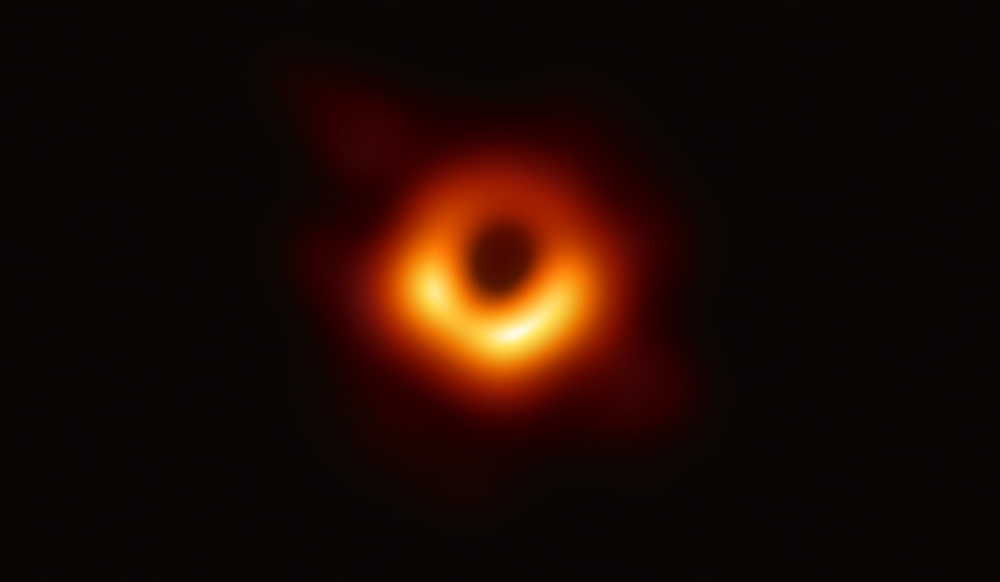

Черные дыры: почему они черные, как их находят
Что такое черная дыра
Черная дыра — это область внутри космоса с настолько сильной гравитацией, что она
засасывает все вокруг, включая свет. Профессор РАН Сергей Попов объясняет,
что у черных дыр нет одного четкого определения, и даже такое —
это один из вариантов. Если спросить разных ученых —
астрофизиков и физиков — они подойдут к ответу с разных сторон.
Есть энциклопедические словари, которые закрепляют определения
и дают конкретные ответы, но единственно верной формулировки
не существует.
Само словосочетание «черная дыра» — это просто удачно придуманное
обозначение.
Примерно как «Большой взрыв». Сама идея черных дыр
возникла в конце XVIII века. Тогда их называли по-другому: были варианты
«застывшие звезды» или «коллапсары». Но в итоге научная журналистка
Энн Юинг предложила такой термин.
Как сфотографировать черную дыру
То, что принято называть фотографией черной дыры, на самом деле — изображение вещества, движущегося вокруг черной дыры. Но в центре действительно возникает темная область, поскольку там находится черная дыра, из которой не может исходить свет.
По большей части черные дыры — маленькие объекты, находящиеся очень далеко от нас. Разглядеть черноту внутри яркой области удалось всего в одном случае. Для качественного снимка нужна была самая большая черная дыра в центре относительно близкой галактики. Дальше встала техническая задача — получить изображение с достаточной детализацией. Ни один телескоп сам по себе не может сделать такое изображение. Но если совместить несколько телескопов и разнести их на большие расстояния, то с точки зрения деталей они будут работать как один большой телескоп. Именно таким способом, при помощи нескольких телескопов, разбросанных почти по всему земному шару, удалось сделать снимок того, что все называют фотографией черной дыры в галактике М87. Такая фотография пока остается единственной.
Первая фотография черной дыры (Фото: NASA)
Информация с сайта: РБК Тренды